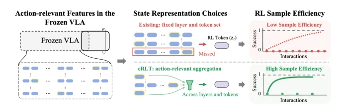
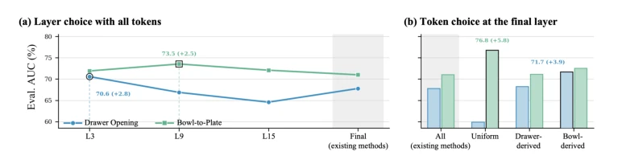
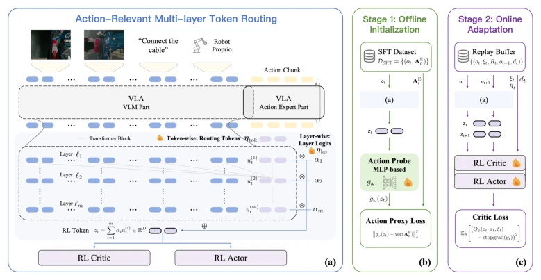
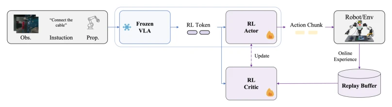
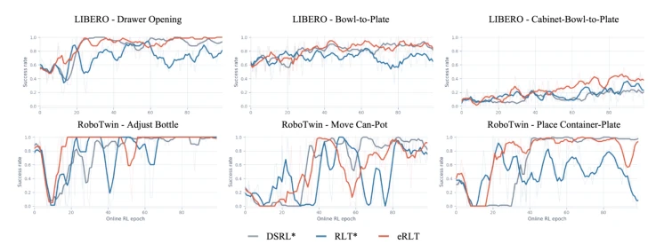
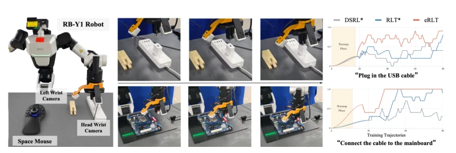
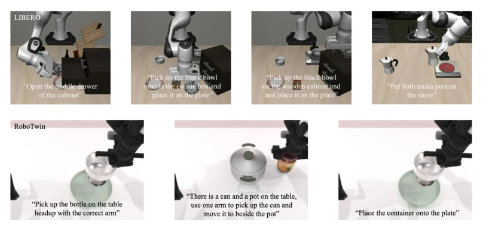
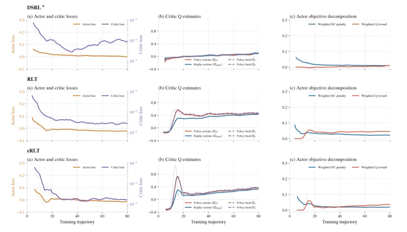
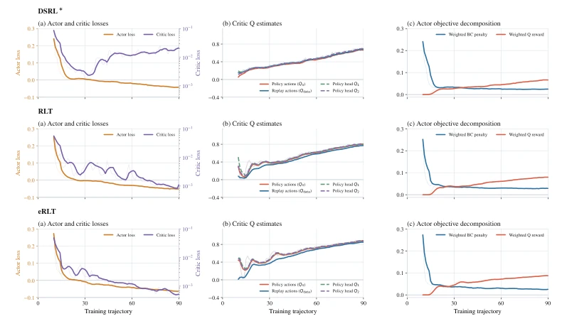

This paper proposes a 'dynamic routing' strategy for VLA online fine-tuning, attempting to address the issue of low sample efficiency. The authors did not undertake extensive pre-training, but instead focused on the internal features of the frozen VLA, using learnable routing tokens to capture task-relevant action information across different layers and tokens. This approach is quite clever, given that knowledge in VLA is distributed, and fixed layers or independent encoders indeed tend to miss key signals. The experimental data looks quite promising, with significant AUC improvements on LIBERO and real-world tasks, especially for delicate tasks like USB insertion, where success rate increased from 50% to 90%. However, this method is not a silver bullet. First, it relies on the upper limit of information encoded by the VLA itself; if the base model has not learned it, routing cannot save it. Second, multi-layer feature extraction and periodic recalculation of RL tokens definitely consume more VRAM and computation than fixed-layer compression, which the paper also admits. Additionally, real-world experiments only covered two insertion tasks, so generalization remains to be seen. Overall, this is an effective optimization within the 'frozen VLA + lightweight RL' paradigm, but do not expect it to replace end-to-end fine-tuning; it is more of an engineering refinement.
The core challenge lies in that, although VLA models provide powerful behavioral priors, when adapting them to specific downstream tasks, the sample efficiency of online reinforcement learning (Online RL) is often insufficient. Existing lightweight online RL methods mainly rely on the Actor-Critic architecture, and the quality of state representation directly determines learning efficiency. Current mainstream solutions either use visual encoders unrelated to VLA (such as DSRL [Wagenmaker et al., 2025; Xiao et al., 2025]), or fix the compression of specific layers and token sets of VLA (such as RLT [Kowshik et al., 2026; Xu et al., 2026]). The former cannot leverage the rich task-specific features inside VLA, while the latter may miss the most critical signals for the current task due to fixed selection. The paper proves through controlled experiments (Figure 2) that the optimal combination of VLA layers and tokens varies dynamically under different tasks, and fixed strategies cannot accommodate both. Therefore, how to dynamically extract task-relevant action features (action-relevant features) from the frozen VLA internal is crucial for improving the accuracy of action fine-tuning and value estimation.

Figure 1: Motivation for task-specific action-relevant RL token construction. The task-specific action-relevant information needed for action refinement and action-value estimation, which is rep- resented by yellow highlight, is distributed across the tokens and layers of a frozen VLA. Existing methods that use fixed layers and tokens can miss features useful for the downstream task, whereas eRLT aggregates them across both dimensions to improve online RL sample efficiency.

Figure 2: Layer and token choices affect online RL. Controlled RLT comparisons on Drawer Opening and Bowl-to-Plate. (a) With all tokens retained, the best source layer differs across tasks. (b) At the final layer, selected token subsets can outperform all tokens, while the best subset also varies across tasks. Values report mean normalized success-rate AUC over three seeds; annotations show absolute improvements over the Final/All baselines.
The overall framework of eRLT is to construct an efficient RL state representation (RL token) while keeping the VLA frozen. In terms of data flow, input images, proprioception, and language instructions first generate multimodal prefix embeddings, then learnable routing tokens (routing tokens) are introduced through an independent forward propagation path. These routing tokens aggregate visual-language features on selected VLM layers, generating layer-wise summary representations. Next, a lightweight layer router (layer router) fuses these summaries into a fixed-dimension RL token through softmax weighting. This token is then combined with proprioception and input into the Actor and Critic.
The innovation lies in two training stages. The first stage is offline initialization, which uses existing expert demonstration data to predict expert action blocks through a lightweight action probe (action probe). This forces the RL token to retain information that is discriminative for action fine-tuning, rather than simple reconstruction. The second stage is online adaptation, which uses the Critic's Bellman target backpropagation to update routing parameters. When similar interactions lead to different results, the Critic guides the routing module to reveal cues that can explain progress differences. This two-stage strategy utilizes expert priors while adapting to the distribution of the current policy through online feedback. VLA parameters are frozen throughout, only updating the routing module and Actor-Critic.

Figure 3: Overview of eRLT. (a) Task-specific action-relevant multi-layer token routing constructs an RL token using learnable routing tokens and layer-wise routing. (b) Expert action prediction teaches the RL token to preserve differences needed for action refinement. (c) The critic uses suc- cessful and failed transitions to emphasize cues needed for action-value estimation.

Figure 6: Lightweight online RL with a frozen VLA. A frozen VLA and a lightweight actor jointly generate executable action chunks. Online interactions train the lightweight critic and actor, and the RL token supplies task-specific action-relevant information to both modules.
Experiments encompass 7 simulation tasks (4 LIBERO, 3 RoboTwin) and 2 real-world precision manipulation tasks (USB insertion, motherboard ribbon insertion). Baselines include DSRL using independent visual encoders and RLT with fixed-layer compression. Evaluation metrics are mainly the normalized area under the learning curve (AUC) and final success rate. Results show that eRLT improved average AUC by 23.7% on simulation tasks, improved AUC by 108.9% on real USB tasks, and final success rate increased from 50% to 90%. Ablation studies show that removing token routing or offline initialization leads to significant performance degradation, proving that dynamic feature extraction and expert initialization are indispensable. In addition, increasing the number of routing tokens is not necessarily better, with the single token configuration performing best. Real experiments also found that eRLT can more consistently correct minor offsets before contact, while baseline methods tend to retain errors leading to insertion failure.

Figure 4: Online learning curves in simulation. Evaluation success rate over online RL epochs on three representative LIBERO tasks (top) and three RoboTwin tasks (bottom). Dark curves show the smoothed trends, and light curves show the corresponding raw evaluations.

Figure 5: Real-world experimental setup and online learning curves. The RB-Y1 robot setup (left), representative execution sequences for USB connector insertion (top center) and motherboard ribbon-cable insertion (bottom center), and the 10-trajectory rolling success rate versus the number of training trajectories for both tasks (right). The shaded region marks the warm-up phase.
其他图片Other Figures

Figure 7: Simulation task overview. The four LIBERO tasks (top) and three RoboTwin tasks (bottom) used in our simulation experiments.

Figure 8: Online optimization dynamics for USB connector insertion. Rows correspond to DSRL∗, RLT, and eRLT. Within each row, the panels show (a) actor and critic losses, (b) critic Q estimates for policy and replay actions, and (c) the weighted behavior-cloning and Q terms in the actor objective. Faint curves denote raw logged values and solid curves denote trailing-five-trajectory means.

Figure 9: Online optimization dynamics for ribbon-cable insertion. Rows correspond to DSRL∗, RLT, and eRLT, using the same metrics and smoothing convention as Figure 8.